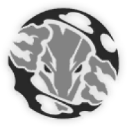
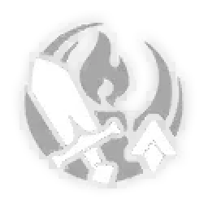

[Single Target]
Toughness Break: 10
Deals Quantum DMG equal to 25%/ 50% of Castorice's Max HP to one designated enemy.

[Blast]
Toughness Break: 20
Consumes 30% of all allies' current HP. Deals Quantum DMG equal to 25%/ 46% of Castorice's Max HP to one designated enemy and Quantum DMG equal to 15% / 28% of Castorice's Max HP to adjacent targets. If the current HP is insufficient, reduces the current HP down to 1. If Netherwing is on the battlefield, the Skill becomes "Boneclaw, Doomdrake's Embrace" instead.
[AoE]
Toughness Reduction: 20
Launching "Breath Scorches the Shadow" will consume 25% of Netherwing's Max HP to deal Quantum DMG equal to 12%-24% of Castorice's Max HP to all enemies. In one attack, "Breath Scorches the Shadow" can be launched repeatedly, with the DMG multiplier increased progressively to 14% / 17%-28% / 34%. After reaching 17%-34%, it will not increase further. The DMG Multiplier Boost effect will not decrease before Netherwing disappears. When Netherwing's current HP is equal to or less than 25% of its Max HP, launching this ability will actively reduce HP down to 1, and then trigger the ability effect equal to that of the Talent "Wings Sweep the Ruins."


[Summon]
Consumes 40% of the current HP of all allies (except Netherwing). Castorice and Netherwing launch Joint ATK on the targets, dealing Quantum DMG equal to 15%/ 30% and 25%/ 50% of Castorice's Max HP to all enemies. If the current HP is insufficient, reduces the current HP down to 1.

After using Technique, enters the "Netherveil" state that lasts for 20 seconds. While "Netherveil" is active, enemies are unable to actively approach Castorice. During "Netherveil," active attacks will cause all enemies within range to enter combat. At the same time, summons the memosprite Netherwing, advances its action by 100%, and deploys the Territory "Lost Netherland." Netherwing has its current HP equal to 50% of max "Newbud." After entering battle, consumes 40% of the current HP of all allies (except Netherwing). If Netherwing is not summoned after entering battle, Castorice gains "Newbud" by an amount equal to 30% of max "Newbud".
[Enhance]
The maximum limit of "Newbud" is related to the levels of all characters on the battlefield. For every 1 point of HP lost by all allies, Castorice gains 1 point of "Newbud." When "Newbud" reaches its maximum limit, can activate the Ultimate. When allies lose HP, Castorice's and Netherwing's DMG dealt increases by 10%/ 20%. This effect can stack up to 3 time(s), lasting for 3 turn(s). When Netherwing is on the field, "Newbud" cannot be gained through Talent, and HP lost by all allies (except Netherwing) will be converted to an equal amount of HP for Netherwing.

[AoE]
Toughness Reduction: 10
Deals Quantum DMG equal to 20%-40% of Castorice's Max HP to all enemies.
[AoE]
Toughness Reduction: 10
Launching "Breath Scorches the Shadow" will consume 25% of Netherwing's Max HP to deal Quantum DMG equal to 12%-24% of Castorice's Max HP to all enemies. In one attack, "Breath Scorches the Shadow" can be launched repeatedly, with the DMG multiplier increased progressively to 14% / 17%-28% / 34%. After reaching 17%-34%, it will not increase further. The DMG Multiplier Boost effect will not decrease before Netherwing disappears. When Netherwing's current HP is equal to or less than 25% of its Max HP, launching this ability will actively reduce HP down to 1, and then trigger the ability effect equal to that of the Talent "Wings Sweep the Ruins."

[Support]
When Netherwing is on the field, it acts as backup for allies. When allies take DMG or consume HP, their current HP can be reduced down to a minimum of 1, after which Netherwing will consume HP at 500% of the original value until Netherwing disappears.
[Bounce]
Toughness Reduction: 5
Consumes all HP and deals 6 instance(s) of DMG, with each instance dealing Quantum DMG equal to 20% of Castorice's Max HP to one random enemy. At the same time, restores HP by an amount equal to 3% of Castorice's Max HP plus 400 for all allies
[Support]
When Netherwing is summoned, increases DMG dealt by all allies by 10%, lasting for 3 turn(s).

While in "Supreme Stance," increases Aglaea's and Garmentmaker's ATK by an amount equal to 720% of Aglaea's SPD plus 360% of Garmentmaker's SPD.
When Garmentmaker disappears, up to 1 stack(s) of the SPD Boost from the Memosprite Talent can be retained. When Garmentmaker is summoned again, gains the corresponding number of SPD Boost stacks.

At the start of battle, if this unit's Energy is lower than 50%, regenerates this unit's Energy to 50%.